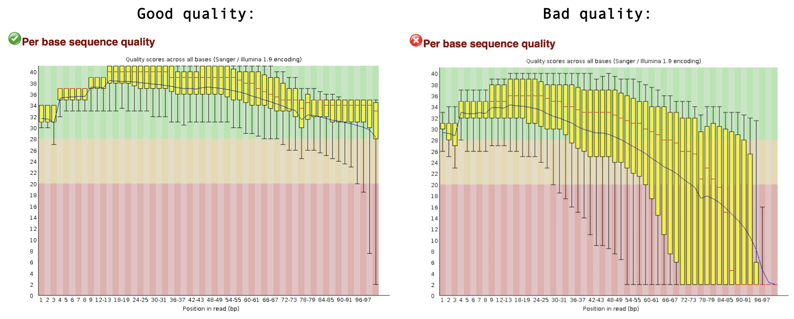
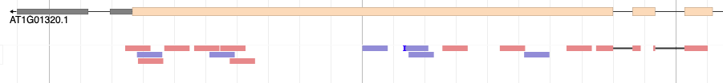

The moment is there: you received the FASTQ files from your sequencing provider! …. now what?
The .fastq files contain your RNA sequencing reads. Our goal is to find out from which genes these reads originate, and whether there are differentially expressed genes between your experimental factors. Before doing that, we need to make sure that the sequencing reads are of good quality, a process called quality control (QC). Additionally, no matter how good the overall quality of the sequencing data is, we will also ‘trim’ our reads to remove bad quality reads and sequencing adapters that may still be present in the sample. So, to summarize, we will do the following steps in this episode:d
Quality control: is my sequencing data of good quality?
Trimming: removing bad quality reads and sequencing adapters
Mapping: where in the genome do these reads come from?
Counting: how many reach originate from each gene?
Setup
For this tutorial, we again connect to the headnode of Crunchomics via Rstudio in the webbrowser. Go to: https://omics-app01.science.uva.nl and login. Then, in the terminal, login to the headnode:
ssh YOURSTUDENTNUMBER@omics-h0.science.uva.nl
Navigate to the MDA directory, and create a new directory for this tutorial:
cd personal/MDA/mkdir RNA-seqcd RNA-seq/
Create a directory to store the raw data, and download the reads that we will use:
Make sure your working directory is rna-seq again.
Quality control: fastqc
The first step in the RNA-seq workflow is to assess the quality of the sequencing reads. Sequence reads generated from next-generation sequencing technologies come in the FASTQ file format. This file format evolved from FASTA: it contains sequence data, but also contains quality information. For a single record (sequence read) there are four lines, each of which are described below:
Line
Description
1
Always begins with ‘@’ and then information about the read
2
The actual DNA sequence
3
Always begins with a ‘+’ and sometimes the same info in line 1
4
Has a string of characters which represent the quality scores; must have same number of characters as line 2
Let’s look at one read. Note that our .fastq files are compressed: they have extension .fastq.gz. Most bioinformatics programs can deal with compressed file, so we don’t need to uncompress them. To have a look at a compressed file on the command line, we can use zcat and then pipe (|) the result into the head function to display the first 4 lines:
The fourth line of each read represent the quality score of each basecall, see Wikipedia for more info. fastqc will use these characters to quantify the quality your read set.
First we make a directory (mkdir) to store the fastqc reports.
2
We call the fastqc program, tell it to store the output in the fastqc_reports directory, and tell it which sample to use.
You’ll see that fastqc created a .html page in the fastqc_reports directory. We’ll inspect it later.
Exercise
Run fastqc on another sample.
Solution
To do this, we need to replace the input filename.
bash
fastqc-o fastqc_reports reads/sample2.fastq.gz
Doing this manually for every sample would be quite tiring, especially when we would have many samples. We will use a for loop, a fundamental programming concept, to automate this process for us:
bash
for sample in data/reads/*.fastq.gzdofastqc-o fastqc_reports ${sample}done
1
Here we define a variable sample that will subsequently get the values of all datasets matching the reads/*.fastq.gz statement, where * acts as a wildcard.
2
do (and later done) define the start and the end of the for loop, respectively.
3
Here we add the actual command that will be repeated for each sample, where $sample will subsequently be filled in with all of our four filenames.
fastq generates reports of each sample in .html and .zip format:
bash
ls fastqc_reportssample1_fastqc.html sample2_fastqc.zip sample4_fastqc.htmlsample1_fastqc.zip sample3_fastqc.html sample4_fastqc.zipsample2_fastqc.html sample3_fastqc.zip
1
ls is a command to ‘list’ all the files present in a directory.
Finally, let’s inspect the QC results. In Rstudio, go to the ‘files’ window. Navigate to the MDA/rna-seq/ directory (by clicking, this time :) ). In the fastqc_reports/ directory, you can click on any of the .html files and display it in your browser. Alternatively, you could download them to your local computer by clicking More > Export. fastqc gives each dataset a score (Pass, Warning, or Fail) on several different modules. All scores are reported in the Summary. The next section contains basic statistics like the number of reads, average sequence length, and the GC content. Generally it is a good idea to keep track of the total number of reads sequenced for each sample and to make sure the read length and GC content is as expected (based on what you know of your studied organism). One of the most important analysis modules is the “Per base sequence quality” plot. This plot provides the distribution of quality scores at each position in the read across all reads. This plot can alert us to whether there were any problems occuring during sequencing. For example, see a good and bad quality result below:

Other modules are discussed in detail here. Note that nearly all sequencing datasets will show yellow warnings or red fails: fastqc is quite conservative. Additionally, the module “Per base sequence content” very often fails for RNA-seq data, as a result of RNA-seq library prep. Your experiment is not lost if you get warnings or fails, but it might warrant additional inspection of the reads. If you suspect something is wrong, don’t hesitate to contact the sequencing provider or your favorite bioinformatician.
Exercise
Inspect all four QC reports, and discuss with your neighbour what you think about them.
Solution
Sample 1, 2 and 3 are actually of good quality. Only the expected module (Per base sequence content) gives a FAIL, all other modules are green!
For sample 4 this is not the case. The quality score of the bases is low, especially towards the end of the reads. Also, fastqc detected a TruSeq sequencing adapter in a small portion of the reads.
Trimming: fastp
A common anomaly detected by fastqc is sequencing adapters still being present some of the the reads (shown in Overrepresented sequences table). This is known as ‘adapter contamination’, and the presence of these adapter sequences in the reads might affect how the reads map to the genome of interest. So, we need to get rid of them. We will use fastp to do this. In addition, fastp will trim low quality bases from the reads. Finally, it will remove reads that are overall of low quality, or are too short after the trimming steps.
fastp prints information about the trimming on the terminal, for example:
partial output
Filtering result:reads passed filter: 39343reads failed due to low quality: 10642reads failed due to too many N: 15reads failed due to too short: 0reads with adapter trimmed: 0bases trimmed due to adapters: 0
The same information is also saved as a nice .html page, you can download them and have a look.
Exercise
After running fastp, the adapter contamination of sample 4 should be gone.
How could you check whether fastp indeed did it’s job?
Write a command to check this.
Solution
We can run fastqc again, this time on the trimmed reads.
By inspecting the .html report of the trimmed reads, we should see that the quality of the read sets has now improved, and that it no longer detects the TruSeq adapters.
Mapping: STAR
Our reads are now ready for mapping. Mapping reads means figuring out where each read from the RNA-seq experiment originally came from within the genome. For RNA-seq experiments, it’s important to pick a splice-aware aligner, since a RNA-seq read can span an exon-intron-exon boundary. After all, the vast majority of RNA you sequenced is mature mRNA where introns have been spliced out.
So, for RNA-seq we need splice-aware aligners. Can you come up with an experiment that would not require a splice-aware aligner program?
Solution
In experiments where we don’t need to think about exon-intron boundaries. This is the case when the reads originate from genomic DNA, for example for whole genome sequencing experiments, or enrichment sequencing experiments like Chip-Seq. We also don’t need a splice-aware aligner if we map RNA-seq reads from organisms that don’t have introns, such as bacteria.
To use an alignment tool, we must first get the reference genome (e.g. via NCBI Genomes, ENSEMBL, ENSEMBL Plants or various organism specific databases), in .fa or .fasta format. A genome assembly contains the entire genome sequence of an organism as plain text, organized by chromosome (for ‘high-quality’ assemblies) or many some unplaced contigs (for ‘draft’ genomes). You will also need an annotation file with all the predicted gene models (.gff or .gtfformat). For this tutorial, the A. thaliana reference genome and annotation are included in the workshop materials.
Let’s have a quick look at the reference genome, after uncompressing them first:
Look at the first 10 lines: a fasta header starting with >, chromosome number, and some metadata. Then, the sequence of that chromosome starts.
2
Search for the character >, which is an essential part of a fasta sequence header. We then see a list of chromosomes included in this genome assembly.
Ok, our Arabidopsis genome assemblies contains 5 chromosomes, and the genomes of the organelles: mitochondria (Mt) and plastid (Pt).
Before we start mapping we need to index the reference genome. Indexing the genome prepares the genome in a way that allows a computer to search it efficiently. The genome, a multi-million basepair long string of text, is encoded into a different, computer-friendly datastructure such as a suffix tree. The details of this procedure are beyond the scope of this tutorial, but it’s important to do it. The Arabidopsis thaliana genome is already present in the notebook. We make the index using STAR:
Let’s look at a mapping summary in a file generated by STAR that ends with .final.out. We can do that on the command line (using cat), or you can download the file and open it in a text editor.
bash
cat mapped_reads/sample1_Log.final.out
It’s important to check how many reads did not map to the reference genome. In our case, it looks like more than 95% of the reads mapped to the reference genome. That’s good! A high proportion of unmapped reads can be a warning sign that something went wrong in your experiment or analysis. The explanations may be technical (bad read quality), bioinformatical (perhaps you used the wrong reference genome!), or biological — it has been well documented that around 11% of primate and rodent cell-line RNA-seq datasets available on NCBI in 2015 were contaminated with mycoplasma RNA (Olarerin-George & Hogenesch, 2015). Likewise, 8,5% of all Arabidopsis thaliana NCBI RNA-seq datasets are contaminated with a virus that does not cause any disease symptoms, but can cover up to 80% of all reads generated in an RNA-seq experiment (Verhoeven et al., 2022). That said, we don’t need to aim for 100% reads mapped to the reference genome. There will always be some contamination, or your studied individual possesses genetic information not present in the reference genome.
BAM and SAM files
The mapped reads are stored in a sorted .bam file by STAR. .sam (and .bam) files keep information for each individual read and its alignment to the genome. .sam files do this in a tab-seperated, human readable format, while .bam files store the same information in a binary file format that’s not readable for humans, but is much more efficient to process and store by computers. samtools is a widely used program to inspect and manipulate .sam and .bam files. Like many command line programs, samtools commands can be connected to each other via the pipe symbol |, and the results can be stored in a new file using the > symbol.
Exercise
Use the head command to inspect a .bam file.
What do you see?
Use samtools view command, piped (using |) into a common Unix program, to inspect the first 10 lines of the file.
Solution
bash
head mapped_reads/sample1_Aligned.sortedByCoord.out.bam
The output looks like gibberish, because .bam files are a binary file format.
You can use samtools view to make samtools read the binary file, and then pipe that result into the head function to show the first 10 lines:
Use the two following commands on a .bam file, and interpret the output.
samtools flagstat
samtools idxstats (Note: before running this command, you need to index the .bam file using samtools index mapped_reads/sample1_Aligned.sortedByCoord.out.bam)
Solution
samtools flagstat shows us (just like the STAR log file) how many reads were mapped correctly. In addition, it tells us whether read pairs (if mapping paired-end data) mapped together as expected (are ‘properly paired’). Today, we used single-end reads so this is not relevant.
samtools idxstats shows us how many reads were mapped to each chromosome of the reference genome. This is useful to confirm whether the entire genome is evenly covered, or that there may be overrepresentation on e.g. the mitochondrial DNA.
Exercise
So far, we only trimmed and mapped one sample. Trim and map the other three samples. Easy mode: repeat the commands performed earlier, update the sample numbers. For a challenge: write two bash for loops to process all four samples.
Solution
For loop to trim:
bash
for sample in reads/*.fastq.gzdoname=$(basename"$sample" .fastq.gz)echo"processing ${name}"fastp\-i reads/${name}.fastq.gz \-o trimmed_reads/${name}.trimmed.fastq.gz \--thread 2 \--html fastp_reports/${name}_fastp_report.htmldone
Note the use of name=$(basename "$sample" .fastq.gz): this is a trick to remove the file extension (.fastq.gz) and the folder structure reads/ from the filenames, resulting in just the sample names e.g. sample1.
For loop to map:
bash
for sample in trimmed_reads/*.trimmed.fastq.gzdoname=$(basename"$sample" .trimmed.fastq.gz)software/STAR\--runThreadN 2 \--genomeDir TAIR10_STAR_index \--readFilesIn trimmed_reads/${name}.trimmed.fastq.gz \--readFilesCommand zcat \--outFileNamePrefix mapped_reads/${name}_ \--outSAMtype BAM SortedByCoordinatedone
Inspecting the mapping on a genome browser
So far, these steps may have been quite abstract. Let’s make it more visual. We will look at our mapped reads in a genome browser.
Download a .bam file with accompanying .bam.bai index file.
Go to File > Open track file or URL > Select Files... to find your files.
Click Open!

That’s wonderful! You should see red and blue (forward and reverse) blocks aligning with the exons of the annotated gene models of A. thaliana. Also notice that some reads will be beautifully split over two or more introns. Good RNA-seq mapping should align predominantly to exons. If this is not the case, something might be wrong. For example, your RNA sample could have been contaminated with genomic DNA. Another option that could explain mappings to non-annotated regions of the genome, is that the annotation may not be complete.
Note
An alternative genome browser that can display .bam files is IGV. In IGV the genomes of many model organisms are available, but you can also upload your own genome of interest.
Obviously, we can’t manually inspect all samples and all genes like this, so we will need to count the number of reads in each in gene in each sample. We will do that in the next and final step of today.
Counting: featureCounts
The featureCounts program will …. count (!) the number of reads that map within an annotated feature. To do this we need the .gff or .gtf gene annotation files. These files contain numerous rows with chromosome, start and end coordinates of all annotated features (e.g. genes!). Here, we chose to aggregate read count by gene (-t gene). Alternative options are transcript and exon (but they may require a different formatting of the annotation file).
The first row records the specific featureCounts command that we used to make this table. Ech subsequent row corresponds to a Geneid. The first six columns provide gene metadata: geneid, chromosome, start and end coordinates, strand, and gene length. All remaining columns contain the read counts of each sample.
Note
To use the featureCounts table with DESeq2, you will need to clean it. First, we don’t need the header that starts with #. Second, we only need the geneid and count columns, nothing else. Third, the sample names should be cleaned from mapped_reads/sample1_Aligned.sortedByCoord.out.bam to just sample1.
You can do this in many ways. It’s possible in R, after loading the data, but before starting DESeq. It’s possible to do this by hand in Excel. Finally, you can do it with a number of unix commands on the command line:
In bioinformatics, there are often many ways to reach the same goal. Here we have selected mapping, trimming and counting tools that we have available and have experience with, but there are many others that perform just as well. The following table highlights a few popular alternative options:
Task
Tool used here
Alternative tools
Trimming
fastp
cutadapt, trimmomatic
Mapping
STAR
HISAT2
Counting
featureCounts
StringTie
Instead of real base-to-base read mapping using STAR or HISAT2, you can also consider quasi-mapping your reads to just the annotated transcript models using salmon. This is much faster and requires less storage space than real mapping, but for educational purposes and smaller scale experiments, true mapping is still more insightful.
Streamlining read mapping procedure
If you find this process quite cumbersome, then I have good news for you! There are pipelines available that streamline the chain of commands required for mapping:
nf-core/rnaseq: developed and maintained by the Nextflow community.
Galaxy server: if you prefer graphical interfaces over command lines, you can contact Frans van der Kloet for access to a Galaxy Server (for UvA/SILS researchers).
A full instruction of these pipelines is beyond the scope of this workshop. Also, we wish to highlight that it is very insightful to have run all the steps by yourself rather than in a pipeline.